Home · Study · Decision models결정 모델
A model class that answers typed questions instead of writing text. This note covers what it is, how it is trained, what the architecture looks like, what one inference actually costs, and how a request flows — for the proprietary side (TypeSafe AI's Jev) and the open side (vLLM Semantic Router), with the arXiv evaluation of Jev in between. 텍스트를 생성하는 대신 타입이 정해진 질문에 답하는 모델 계열을 정리했습니다. 이 글은 그 정체와 학습 방식, 모델 구조, 추론 한 번에 드는 실제 비용, 요청이 흘러가는 경로를 다룹니다. 독점 진영인 TypeSafe AI의 Jev와 오픈 진영인 vLLM Semantic Router를 함께 살펴보고, 그 사이에 Jev를 실제로 측정한 arXiv 평가 논문을 배치했습니다.
A model that reads a supplied state and returns a typed answer plus probabilities, instead of generating prose. "System One" is TypeSafe's name for the class, borrowed from Kahneman's fast, intuitive System 1.주어진 상태를 읽고 산문을 생성하는 대신, 타입이 정해진 답과 확률을 돌려주는 모델입니다. "System One"은 TypeSafe가 이 범주에 붙인 이름이며, 카너먼이 말한 빠르고 직관적인 시스템 1에서 가져왔습니다.
The three typed primitives. Choice picks one option from a list you define. Score returns a level on an ordered rubric. Noul returns a yes/no probability. All three come back as data, never as a sentence.타입이 정해진 세 가지 질문 형식입니다. Choice는 직접 정의한 목록에서 하나를 고르고, Score는 순서가 있는 척도에서 수준을 돌려주며, Noul은 예/아니오 확률을 돌려줍니다. 셋 모두 문장이 아니라 데이터로 반환됩니다.
The property that a stated probability matches the real hit rate: among answers given 0.8, about 80% should be right. Without it a confidence number cannot be used as a threshold in code.모델이 제시한 확률이 실제 적중률과 일치하는 성질입니다. 확률 0.8로 답한 사례 가운데 약 80%가 맞아야 합니다. 이 성질이 없으면 confidence 값을 코드에서 임계값으로 사용할 수 없습니다.
Reinforcement Learning for Calibrated Decisions — TypeSafe's name for its post-training objective, positioned beside RLHF and RLVR. The name and the goal are published; the formulation is not.Reinforcement Learning for Calibrated Decisions의 약자로, TypeSafe가 자사 사후 학습 목표에 붙인 이름입니다. RLHF 및 RLVR과 나란히 놓고 설명하는데, 이름과 목적만 공개되었고 수식은 공개되지 않았습니다.
A layer in front of a model fleet that reads the incoming request and decides which model serves it, whether to enable reasoning, and which safety policy applies — before any token is generated.여러 모델 앞단에 놓여서 들어온 요청을 읽고, 어느 모델이 처리할지와 추론 모드를 켤지, 어떤 안전 정책을 적용할지를 토큰 생성 이전에 결정하는 계층입니다.
TypeSafe's own term for the uneven competence surface of a model: tasks where it is reliable sit next to tasks where it is not. They publish a page listing Jev's known weak spots.모델의 능력이 고르지 않은 성질을 가리키는 TypeSafe 자체 용어입니다. 신뢰할 수 있는 작업 바로 옆에 그렇지 못한 작업이 놓여 있다는 뜻이며, 회사가 Jev의 알려진 약점을 모아 문서로 공개합니다.
Most production uses of an LLM do not want an essay. They want a verdict that the next line of code can branch on: is this ticket a refund request, does this claim need a manager's sign-off, should this query go to the reasoning model. The usual way to get that verdict is to ask a text generator for JSON and parse it back. The decision-model argument is that this detour is the problem itself. 실무에서 LLM을 쓰는 대부분의 상황은 긴 글을 원하지 않습니다. 바로 다음 줄의 코드가 분기 조건으로 삼을 수 있는 판정을 원합니다. 이 티켓이 환불 요청인지, 이 청구가 관리자 승인을 거쳐야 하는지, 이 질의를 추론 모델로 보내야 하는지가 그런 판정입니다. 보통은 텍스트 생성 모델에게 JSON을 요구한 다음 그것을 다시 파싱해서 판정을 얻습니다. 결정 모델 진영의 주장은 바로 이 우회 자체가 문제라는 것입니다.
"Large language models (LLMs) are designed to produce text for humans to read. When you need a model to make a judgment that your code will consume, that creates a mismatch: you are coercing a text-generation system into outputting structured decisions, then parsing the results back into something your code can depend on."
— TypeSafe AI docs · Introduction
The proposed fix is to change the output contract rather than the prompt. The model never emits a sentence; it emits a value of a type the caller declared in advance, together with a probability distribution over the allowed values. Everything numeric stays in code. 제안된 해법은 프롬프트를 손보는 것이 아니라 출력 계약 자체를 바꾸는 것입니다. 모델은 문장을 내놓지 않고, 호출자가 미리 선언한 타입의 값을 허용된 값들에 대한 확률 분포와 함께 내놓습니다. 수치 계산은 전부 코드에 남겨 둡니다.
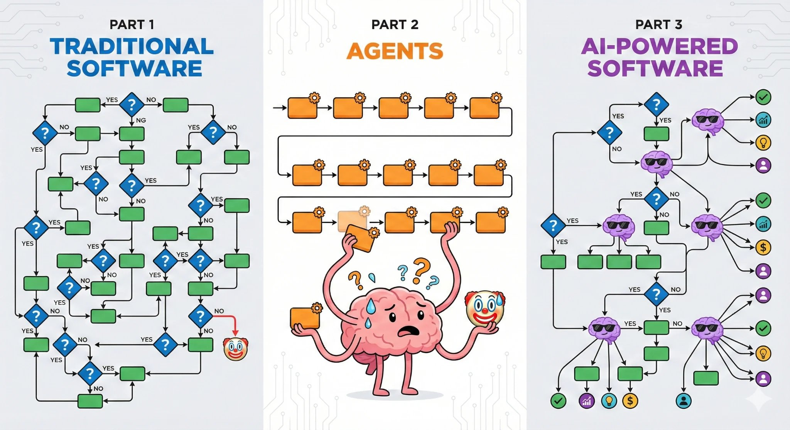
Three system shapes as the vendor frames them: traditional software, agents, and AI-powered software where a decision model sits inside ordinary control flow.벤더가 제시하는 세 가지 시스템 형태입니다. 전통적인 소프트웨어, 에이전트, 그리고 결정 모델이 일반적인 제어 흐름 안에 들어가 있는 AI 기반 소프트웨어를 나란히 보여 줍니다.
Source: TypeSafe AI docs — How to build with System One (local mirror)
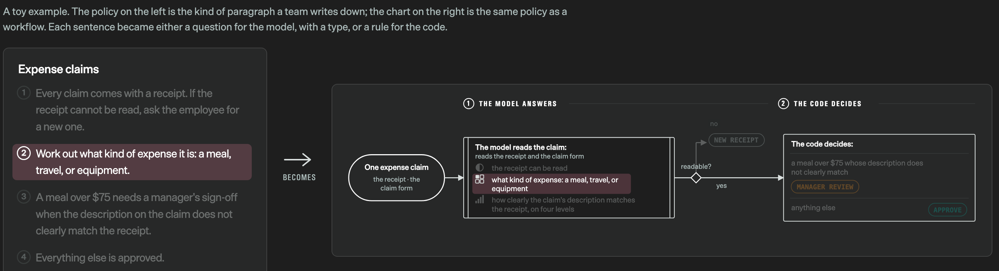
What "decompose the work" means concretely: a four-sentence expense policy on the left becomes, on the right, three typed questions for the model and the branching rules for the code. Each sentence became either a question with a type, or a rule."업무를 분해한다"는 말의 구체적인 모습입니다. 왼쪽의 네 문장짜리 경비 정책이 오른쪽에서 모델에게 던질 타입 질문 세 개와 코드가 처리할 분기 규칙으로 나뉩니다. 각 문장이 타입이 붙은 질문이 되거나 규칙이 되었습니다.
Screenshot: evals.typesafe.ai
What makes this worth a note right now is that the same idea arrived from two directions within weeks of each other, and the two sides disclose almost opposite amounts. 지금 이 주제를 정리할 가치가 있는 이유는, 같은 발상이 불과 몇 주 간격으로 서로 다른 두 방향에서 등장했고, 두 진영이 공개하는 정보의 양이 거의 정반대이기 때문입니다.
| Jev (TypeSafe AI)Jev (TypeSafe AI) | vLLM Semantic RoutervLLM Semantic Router | |
|---|---|---|
| Typed primitives타입 프리미티브 | Choice · Score · Noul | Choice · Noul · Score · Set · Span |
| Weights가중치 | closedno HuggingFace page existsHuggingFace 페이지가 존재하지 않습니다 | openpublished collections컬렉션으로 공개되어 있습니다 |
| Architecture모델 구조 | not disclosed | disclosedbase checkpoints named기반 체크포인트가 명시되어 있습니다 |
| Training학습 | name onlyRLCD, no formulationRLCD라는 이름뿐이며 수식은 없습니다 | code in repodatasets and recipes데이터셋과 학습 레시피가 들어 있습니다 |
| Where it runs실행 위치 | hosted API호스팅 API | in your own serving path자체 서빙 경로 안 |
Jev is TypeSafe AI's flagship and, in their framing, the first System One model. The version the arXiv paper evaluates is jev-1.13. Input is text only: a string, a JSON object, or an array of text values.
Jev는 TypeSafe AI의 대표 모델이며, 회사의 표현을 빌리면 최초의 System One 모델입니다. arXiv 논문이 평가한 버전은 jev-1.13입니다. 입력은 텍스트만 받으며, 문자열과 JSON 객체, 그리고 텍스트 값의 배열을 지원합니다.
"System One models do not write replies, produce code, or generate explanations of their reasoning. You define the possible answers through primitives."
— TypeSafe AI docs · Concepts — System One
The documentation is unusually blunt about the boundary. On the model's own page: "jev-1.13 is not trained to generate text. While you can force it to by chaining choices, this will not work well and will be very slow." There is also no drop-in replacement story: the docs state directly that Jev is not a model you point a coding agent at.
문서는 이 경계를 이례적으로 분명하게 밝힙니다. 모델 자체 페이지에는 "jev-1.13 is not trained to generate text. While you can force it to by chaining choices, this will not work well and will be very slow."라고 적혀 있습니다. 또한 기존 모델을 갈아 끼우는 용도로 쓸 수 있다는 설명도 없습니다. 코딩 에이전트가 가리키는 모델로 Jev를 쓸 수는 없다고 문서가 직접 못 박고 있습니다.
A request carries a state and a map of named questions. Each question declares its type and its allowed answers. This example sends three questions of three different types against one support ticket.
요청은 state 하나와 이름이 붙은 질문들의 맵을 함께 보냅니다. 각 질문은 자신의 타입과 허용되는 답을 선언합니다. 아래 예시는 고객 지원 티켓 하나에 서로 다른 타입의 질문 세 개를 붙여서 보냅니다.
{
"state": "Hi, I've been trying to connect my Stripe account for 3 days and the integration keeps failing. I'm losing sales. Please help ASAP.",
"model": "jev-latest",
"questions": {
"department": {
"type": "choice",
"instructions": "Which team should handle this",
"criteria": {
"billing": "Payment or subscription issues",
"technical": "Bugs or integration problems",
"sales": "Pricing or account questions"
}
},
"frustration": {
"type": "score",
"instructions": "How frustrated the customer appears",
"criteria": ["Calm, just stating facts", "Frustrated but civil", "Very angry, strong language"]
},
"is_urgent": {
"type": "noul",
"instructions": "The message conveys urgency or time-sensitivity"
}
}
}The response answers all three under the same keys, each with its own probability distribution. 응답은 세 질문을 같은 키 아래에 그대로 돌려주며, 각각 자신의 확률 분포를 함께 담습니다.
{
"model": "jev-1.13.0",
"answers": {
"department": { "type": "choice", "choice": "technical", "confidence": 0.78,
"probabilities": { "technical": 0.85, "billing": 0.15, "sales": 0.0 } },
"frustration": { "type": "score", "score": 1.0, "confidence": 1.0,
"legend": { "0": "Calm...", "1": "Frustrated but civil", "2": "Very angry..." },
"probabilities": { "0": 0.0, "1": 1.0, "2": 0.0 } },
"is_urgent": { "type": "noul", "noul": 1.0 }
},
"usage": { "input_tokens": 392, "output_tokens": 65 }
}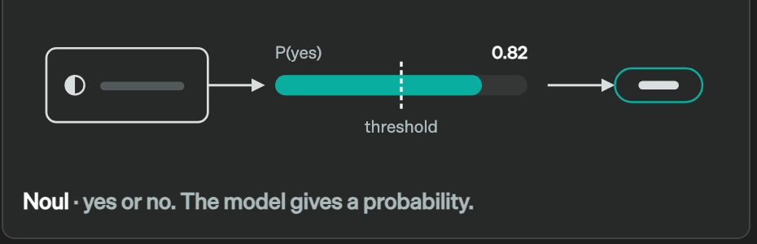
A Noul answer in practice: the model returns P(yes), and the caller's threshold turns it into a branch. The probability is the model's output; the threshold is the caller's policy.Noul 답변이 실제로 쓰이는 방식입니다. 모델은 P(yes)를 돌려주고, 호출자가 정한 임계값이 그 값을 분기로 바꿉니다. 확률은 모델의 출력이고 임계값은 호출자의 정책입니다.
Screenshot: evals.typesafe.ai
confidence field — only the probability itself, from which the caller derives confidence as |2p − 1|. Second, a Choice is capped at 255 options and a Score at 2–10 levels, so a taxonomy larger than that must be split across questions or narrowed in code first.
첫째로 Noul은 confidence 필드를 돌려주지 않습니다. 확률만 반환하며, 호출자가 |2p − 1|로 직접 계산해야 합니다. 둘째로 Choice는 옵션이 255개로 제한되고 Score는 2단계에서 10단계까지만 허용되므로, 그보다 큰 분류 체계는 질문을 나누거나 코드에서 먼저 후보를 좁혀야 합니다.
confidence actually computes2.2 — confidence가 실제로 계산하는 값The confidence number is not a separate prediction. It is a closed-form function of the probability distribution, and the docs publish both formulas. For a Choice over n options with top probability pmax: confidence 값은 별도의 예측이 아닙니다. 확률 분포로부터 계산되는 닫힌 형태의 함수이며, 두 공식 모두 문서에 공개되어 있습니다. 옵션이 n개이고 최대 확률이 pmax인 Choice의 경우는 다음과 같습니다.
confidence = ( n · p_max − 1 ) / ( n − 1 ) 동등한 표현: ( p_max − 1/n ) / ( 1 − 1/n )Read it as "how far the leading option rose above an even split." If every option is equally likely, pmax = 1/n and confidence is 0. If one option takes all the mass, confidence is 1. Note what it ignores: only the top probability and the option count enter the formula, so the shape of the remaining mass does not matter. Checking it against the documented response above — three options, top probability 0.85: "선두 옵션이 균등 분배보다 얼마나 더 올라왔는가"로 읽으면 됩니다. 모든 옵션이 동일한 확률이면 pmax = 1/n이 되어 confidence는 0이 되고, 한 옵션이 확률을 모두 가져가면 1이 됩니다. 이 공식이 무엇을 무시하는지도 중요합니다. 최대 확률과 옵션 개수만 들어가므로, 나머지 확률이 어떻게 분포하는지는 결과에 영향을 주지 않습니다. 위에 인용한 실제 응답으로 검산하면, 옵션이 3개이고 최대 확률이 0.85이므로 다음과 같습니다.
( 3 × 0.85 − 1 ) / ( 3 − 1 ) = 1.55 / 2 = 0.775 → 문서의 "confidence": 0.78 과 일치Score uses a different formula, and the difference is a real design decision rather than an implementation detail. It measures the spread of probability mass around the modal level, normalized by the spread of a uniform distribution: Score는 다른 공식을 쓰는데, 그 차이는 구현상의 사소한 사항이 아니라 의도된 설계 결정입니다. 최빈 수준을 중심으로 확률이 얼마나 퍼져 있는지를 측정한 다음, 균등 분포의 퍼짐 정도로 나누어 정규화합니다.
spread = Σ p_i · | i − peak | peak = 가장 확률이 높은 수준의 인덱스
evenSpread = ( Σ | i − (n−1)/2 | ) / n 균등 분포일 때의 평균 편차
confidence = 1 − spread / evenSpreadBecause the distance |i − peak| appears in the sum, probability sitting two levels away costs more confidence than probability on the neighbouring level. In other words Score treats its levels as an ordered scale, while Choice treats its options as an unordered set. That is the right behaviour for a rubric, and it is worth knowing when you choose between the two primitives for a question that could be modelled either way.
합산식 안에 거리 |i − peak|가 들어 있으므로, 두 단계 떨어진 곳에 놓인 확률이 바로 옆 단계에 놓인 확률보다 confidence를 더 많이 깎습니다. 다시 말해 Score는 수준들을 순서가 있는 척도로 다루고, Choice는 옵션들을 순서가 없는 집합으로 다룹니다. 루브릭에는 이 동작이 적절하며, 어느 프리미티브로도 표현할 수 있는 질문에서 둘 중 하나를 고를 때 알아 두면 유용합니다.
This is the thinnest part of the record. TypeSafe publishes no paper, no model card, and no weights, so the architecture section of this note is mostly a list of blanks. The complete set of architectural statements the vendor has made in public is four sentences: 여기가 자료가 가장 빈약한 대목입니다. TypeSafe는 논문도 모델 카드도 가중치도 공개하지 않으므로, 이 글의 구조 설명은 대부분 빈칸의 목록이 됩니다. 벤더가 공개적으로 밝힌 구조 관련 진술을 전부 모으면 문장 네 개입니다.
"We built a new class of models, System One Models, to be natively used by machines. We're building with a new architecture, a new sampler, and a new training algorithm: Reinforcement Learning for Calibrated Decisions (RLCD)."
"Parallel: Generates all outputs in a single query. Incredibly efficient and hardware-aware."
"Jev ingests the
stateonce and evaluates every question against it in parallel.""Like an LLM, a System One model understands natural-language input. It returns typed decisions and probabilities rather than generated text."
— TypeSafe AI · typesafe.ai, launch blog, docs — Models, docs — System One
| Property항목 | Status공개 여부 | Value내용 |
|---|---|---|
| Context window컨텍스트 길이 | disclosed | 64k tokens per request; 32k for the state plus the single longest question요청당 64k 토큰이며, 상태와 가장 긴 질문 하나를 합한 값에는 32k 상한이 따로 적용됩니다 |
| Input formats입력 형식 | disclosed | text only — string, JSON object, or array of text텍스트 전용이며 문자열과 JSON 객체, 텍스트 배열을 받습니다 |
| Answer-space caps답변 공간 상한 | disclosed | Choice ≤ 255 options · Score 2–10 levelsChoice는 옵션 255개 이하, Score는 2~10단계입니다 |
| Base model / family기반 모델 계열 | not disclosed | never named언급된 적이 없습니다 |
| Parameter count파라미터 수 | not disclosed | no credible source states it신뢰할 만한 출처가 존재하지 않습니다 |
| Encoder or decoder인코더인지 디코더인지 | not disclosed | never stated밝힌 적이 없습니다 |
| Weights가중치 | closed | no HuggingFace pageHuggingFace 페이지가 없습니다 |
| Serving stack / hardware서빙 스택과 하드웨어 | not disclosed | only "hardware-aware" as marketing copy마케팅 문구인 "hardware-aware" 외에는 없습니다 |
jev-1.13 leans toward the option that comes first." That is the most technically revealing sentence TypeSafe has published. A pure parallel readout over independent option heads would be order-invariant; a first-position preference implies the options are serialized into the model's input in the order you wrote them. Practically it also means the returned probabilities are not a clean posterior over the option set, and the vendor's own remedy is to reorder the options and check that the answer holds.
jaggedness 페이지는 Choice 옵션 순서에 따른 편향을 인정합니다. "the order of a Choice's options can affect the answer, and jev-1.13 leans toward the option that comes first."라고 적혀 있습니다. 이 문장은 TypeSafe가 공개한 내용 가운데 기술적으로 가장 많은 것을 알려 줍니다. 옵션마다 독립적인 출력 헤드를 두고 병렬로 읽어 내는 구조라면 순서에 영향을 받지 않아야 합니다. 앞에 놓인 옵션을 선호한다는 사실은 옵션들이 작성한 순서대로 모델 입력에 직렬화되어 들어간다는 점을 시사합니다. 실무적으로는 반환되는 probabilities가 옵션 집합에 대한 깨끗한 사후 확률이 아니라는 뜻이기도 하며, 벤더가 제시하는 대응책도 옵션 순서를 바꿔 보고 답이 유지되는지 확인하라는 것입니다.
One documentation conflict worth recording: Cloudflare's model page lists a 32,000-token context window, which contradicts TypeSafe's own 64k figure. Cloudflare appears to be reporting only the state budget. Use TypeSafe's numbers and treat Cloudflare as a source for pricing and the Workers binding. 기록해 둘 만한 문서 간 충돌이 하나 있습니다. Cloudflare의 모델 페이지는 컨텍스트 길이를 32,000토큰으로 적어 두었는데, 이는 TypeSafe 자체 수치인 64k와 어긋납니다. Cloudflare는 상태에 할당된 예산만 보고하는 것으로 보입니다. 수치는 TypeSafe 쪽을 따르고, Cloudflare는 가격과 Workers 연동 정보의 출처로만 쓰는 편이 안전합니다.
TypeSafe positions its post-training objective as a third path beside the two everyone knows. TypeSafe는 자사의 사후 학습 목표를 널리 알려진 두 가지 경로 옆에 놓인 세 번째 길로 설명합니다.
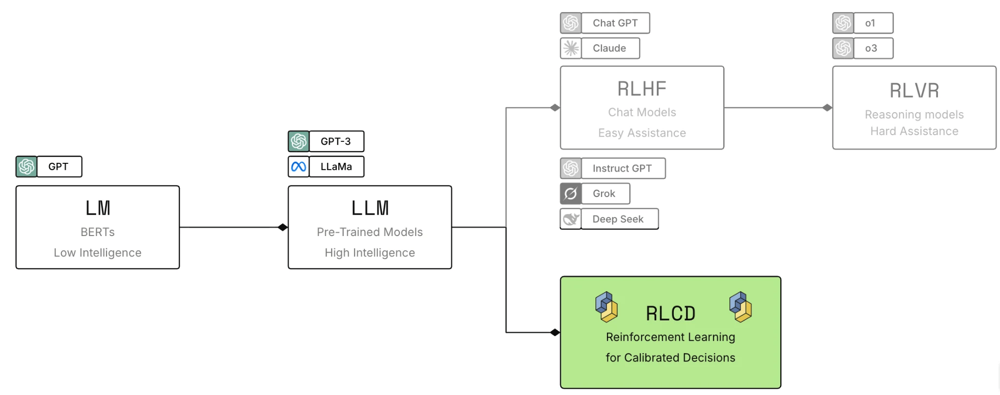
The vendor's own lineage diagram: a pretrained model branches into RLHF (chat models), RLVR (reasoning models), and RLCD (decision models).벤더가 직접 그린 계보도입니다. 사전학습 모델이 RLHF(대화 모델)와 RLVR(추론 모델), 그리고 RLCD(결정 모델)로 갈라집니다.
Source: TypeSafe AI docs — AI primer (local mirror)
"RLHF — Reinforcement learning from human feedback turned pretrained models into chatbots. It trains models to produce responses people prefer.
— TypeSafe AI docs · AI primer
RLVR — Reinforcement learning with verifiable rewards created reasoning models that are strong at tasks such as mathematics, but slower and more expensive.
RLCD — Reinforcement learning for calibrated decisions trains TypeSafe to return decisions and calibrated probabilities instead of generated text."
The stated output contract is three lines: the model does not generate text, it returns decisions and probabilities, and a higher probability should correspond to a greater chance that the answer is correct. The motivating critique of RLHF is the best-developed part of the argument, and it is a serious one. 명시된 출력 계약은 세 줄입니다. 모델은 텍스트를 생성하지 않고, 결정과 확률을 반환하며, 더 높은 확률이 더 높은 정답 가능성에 대응해야 한다는 것입니다. RLHF에 대한 비판이 이 주장에서 가장 잘 전개된 부분이며, 제기하는 문제도 진지합니다.
"RLHF teaches a model to say things that people prefer. That objective works well for chatbots, but it can also reward sycophancy and confident-sounding hallucinations. Preference optimization also causes mode dropping: the model learns to favor a particular style, such as instruction following, while reducing the probability of other possible outputs."
"An output can be compelling to a person without being reliable enough for unattended automation. Human preference and machine trustworthiness are different optimization targets."
— TypeSafe AI docs · AI primer
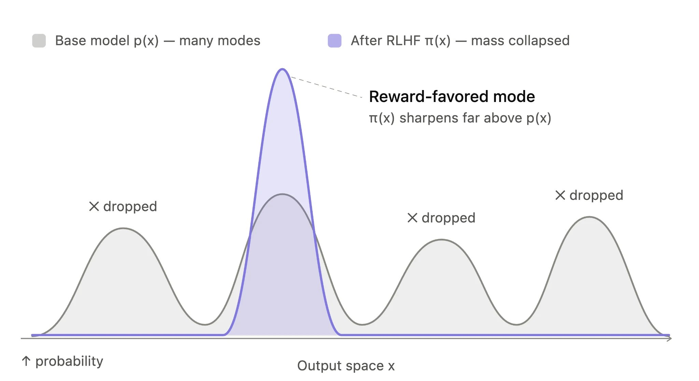
Mode dropping as the vendor illustrates it: preference optimization narrows the output distribution, reducing the probability of outputs that were available in the base model.벤더가 설명하는 mode dropping입니다. 선호 최적화가 출력 분포를 좁혀서, 기반 모델에서는 가능했던 출력의 확률을 낮춘다는 내용입니다.
Source: TypeSafe AI docs — AI primer (local mirror)
Billing is per input token only. Output tokens are free, and there is no per-call or per-question fee. Combined with "ingest the state once, answer every question against it," this produces a cost curve that behaves unlike a chat API. 과금은 입력 토큰에만 적용됩니다. 출력 토큰은 무료이고, 호출당 요금이나 질문당 요금도 없습니다. "상태를 한 번 읽고 모든 질문에 대해 평가한다"는 설계와 합쳐지면, 대화형 API와는 전혀 다른 비용 곡선이 나옵니다.
The vendor's own measurement: 13 questions (8 Noul, 2 Choice, 3 Score) over the GDPR Wikipedia article, roughly 54,000 characters, averaged over five runs.벤더가 직접 측정한 결과입니다. GDPR 위키백과 문서 약 54,000자에 질문 13개(Noul 8개, Choice 2개, Score 3개)를 던지고 5회 실행을 평균했습니다.
Source: TypeSafe AI docs — Parallel questions cookbook
The vendor is honest about one half of this claim, and the caveat deserves to travel with the number: "the figure sums the 13 single-call latencies, so it assumes they run one after another. Fire them concurrently and the gap shrinks, but the 13x token cost stays." So the latency win depends on whether your alternative was serialized; the cost win is structural and does not. 벤더는 이 주장의 절반에 대해 솔직하게 단서를 달아 두었고, 그 단서는 수치와 함께 인용할 가치가 있습니다. "the figure sums the 13 single-call latencies, so it assumes they run one after another. Fire them concurrently and the gap shrinks, but the 13x token cost stays."라고 적혀 있습니다. 즉 지연 시간에서의 이득은 비교 대상이 순차 실행이었는지에 따라 달라지지만, 비용에서의 이득은 구조에서 나오므로 그렇지 않습니다.
| Item항목 | Value값 | Source출처 |
|---|---|---|
| Input price입력 가격 | $0.042 / 1M tokens ($42 per 1B) | docs — Models |
| Output price출력 가격 | $0.00 — free, unmetered— 무료이며 측정하지 않습니다 | docs — Models |
| Per-call / per-question fee호출당·질문당 요금 | none없습니다 | docs — Models |
| Rate limits요청 한도 | 100K tok/s · 80 req/s | docs |
| Latency, vendor headline벤더가 밝힌 지연 시간 | 70–500 ms, most around 100 ms70~500ms이며 대개 100ms 부근입니다 | third-partyflaviocopes.com |
| Latency, vendor benchmark벤더 벤치마크 지연 시간 | 0.4 s mean per case over four workflows네 가지 워크플로 평균으로 사례당 0.4초입니다 | evals.typesafe.ai |
This is the page the arXiv harness was built to follow, and it is genuinely unusual: a structured catalogue of what the model is bad at, maintained by the people selling it. arXiv 논문의 실험 장치가 따랐다고 밝힌 바로 그 문서이며, 모델을 판매하는 쪽이 직접 관리하는 약점 목록이라는 점에서 보기 드문 자료입니다.
"
— TypeSafe AI docs · Model jaggedness — jev-1.13jev-1.13is fast, calibrated, and good at common-sense judgment but it is not perfect. It may struggle with tasks that require additional levels of indirection. It can be quite literal in its understanding. It struggles with tasks that require numeric precision."
| # | Failure mode실패 유형 | Vendor's remedy벤더가 제시하는 대응 |
|---|---|---|
| 1 | Literal reading문자 그대로 읽음 | Write the exact condition and criteria for each option조건과 옵션별 기준을 정확히 적습니다 |
| 2 | Math and numbers수학과 수치 | Keep the arithmetic in code산술은 코드에 남겨 둡니다 |
| 3 | Date and time comparison날짜와 시각 비교 | Extract components, compare in code구성 요소를 뽑아 코드에서 비교합니다 |
| 4 | Indirection간접 참조 | Reduce hops, point at the relevant state단계를 줄이고 관련된 상태를 직접 가리킵니다 |
| 5 | Large state full of irrelevant detail무관한 내용이 많은 큰 상태 | Filter first, send only what the question needs먼저 걸러서 질문에 필요한 내용만 보냅니다 |
| 6 | Adversarial content적대적 입력 | Precise prompts, test edge cases before deploying프롬프트를 정밀하게 쓰고 배포 전에 경계 사례를 시험합니다 |
| 7 | Contradictory instructions and criteria지시와 기준의 모순 | Align the criteria and the instruction기준과 지시를 일치시킵니다 |
| 8 | Choice option orderChoice 옵션 순서 | Reorder the options and check the answer is consistent옵션 순서를 바꿔 답이 유지되는지 확인합니다 |
| 9 | Generation생성 | Use a generative model생성 모델을 사용합니다 |
Item 2 is the one that explains the arXiv harness. The docs state plainly that "Jev is not a calculator. We strongly recommend implementing any mathematical logic in code," and the counting sub-case says something sharper about how the model works: arXiv 논문의 실험 장치를 설명해 주는 항목은 2번입니다. 문서는 "Jev is not a calculator. We strongly recommend implementing any mathematical logic in code."라고 분명히 밝히며, 세부 항목인 세기(counting)에 대해서는 모델의 작동 방식에 관해 더 날카로운 설명을 내놓습니다.
"
— TypeSafe AI docs · Model jaggedness — jev-1.13jev-1.13does not count reliably. This covers characters in a word, occurrences of a term in a passage, and items in a long list. The model recognizes the shape of an answer rather than tallying, and the error grows with the size of the thing being counted."
"Recognizes the shape of an answer rather than tallying" is the clearest statement anywhere in the public record about what this model is doing, and it is also the reason the paper in §3 hands every number to code. "세는 것이 아니라 답의 형태를 알아본다"는 이 문장은 공개된 자료 전체에서 이 모델이 실제로 무엇을 하는지 가장 분명하게 설명한 대목이며, 3장의 논문이 모든 수치 계산을 코드에 맡긴 이유이기도 합니다.
"Jev for Scientific Decisions: Evaluating Semantic Choices and Their Consequences" (arXiv:2609.24965, v2 2026-09-23) is a four-author evaluation from Johns Hopkins, Columbia, Hong Kong PolyU and Penn State. It puts Jev and eleven other configurations through the same harness on ten scientific cases. The contribution worth carrying away is not the ranking; it is the scoring contract. "Jev for Scientific Decisions: Evaluating Semantic Choices and Their Consequences"(arXiv:2609.24965, v2는 2026년 9월 23일)는 존스홉킨스, 컬럼비아, 홍콩이공대, 펜실베이니아주립대 소속 네 저자가 쓴 평가 논문입니다. Jev를 포함한 12개 구성을 동일한 실험 장치에 넣고 과학 사례 10건으로 측정했습니다. 여기서 가져갈 가치가 있는 기여는 순위가 아니라 채점 방식입니다.
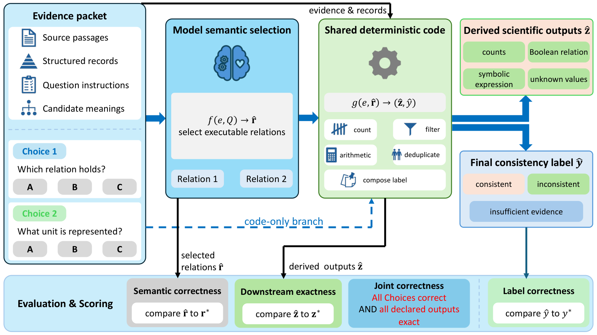
Paper Fig. 1 — the full harness. The model's only job is the blue box; every number is produced by the green box. The bottom strip is the four-level scoring contract.논문 Fig. 1이며 실험 장치 전체를 보여 줍니다. 모델이 맡는 일은 파란 상자 하나뿐이고, 모든 수치는 초록 상자가 만들어 냅니다. 아래쪽 띠가 네 단계로 나뉜 채점 방식입니다.
Source: arXiv:2609.24965v2, Figure 1 (local mirror, CC BY-NC-ND 4.0)
The split is two functions. Written plainly: 이 구조는 함수 두 개로 나뉩니다. 풀어서 쓰면 다음과 같습니다.
f(e, Q) → r̂ 모델이 하는 일. 증거 e 와 질문 Q 를 받아 "실행 가능한 관계" r̂ 를 고른다.
g(e, r̂) → (ẑ, ŷ) 코드가 하는 일. 같은 증거 e 와 모델이 고른 r̂ 로
count · filter · arithmetic · deduplicate 를 수행하고 라벨을 구성한다.
e = 증거 꾸러미(원문 구절 + 구조화된 기록) r̂ = 모델이 선택한 관계
ẑ = 파생된 과학적 산출값(개수, 불리언, 기호식, 미지값)
ŷ = 최종 일관성 라벨(consistent / inconsistent / insufficient evidence)The model never produces a number. That design is not the authors' invention: it is a direct implementation of TypeSafe's own guidance from §2.6, which is worth stating plainly because it shapes how the result should be read. 모델은 수치를 전혀 생성하지 않습니다. 이 설계는 저자들이 고안한 것이 아니라 2.6절에서 본 TypeSafe 자체 권고를 그대로 구현한 것입니다. 결과를 어떻게 읽어야 하는지에 영향을 주는 사항이므로 분명히 밝혀 둘 필요가 있습니다.
"Following Jev's guidance, the harness asks atomic questions, points each question to the supplied evidence and keeps counting, filtering, arithmetic and label composition in code. Jev uses its native Choice interface; the other models return candidate identifiers through a constrained JSON schema."
— §2.1 ¶3 · arXiv:2609.24965v2 §2.1
Each configuration runs 10 cases × 5 repeats = 50 requests, each request carrying 2 Choices, so 100 semantic answers, 50 output bundles and 50 labels. The four scores are simple averages, and what matters is which failure each one can see. 각 구성은 10개 사례를 5회씩 반복하여 50건을 요청하고, 요청 하나에 Choice 두 개가 실려 있으므로 의미 선택 답변 100개와 산출값 묶음 50개, 라벨 50개가 나옵니다. 네 가지 점수는 단순 평균이며, 중요한 것은 각 점수가 어떤 실패를 볼 수 있는가입니다.
A_S = (1/100) · Σ s 의미 정확성. 고른 관계가 참조 답과 정확히 일치하는가.
A_D = (1/50) · Σ d 하위 산출값. 선언된 모든 출력 필드가 값과 타입까지 일치하는가.
A_L = (1/50) · Σ ℓ 최종 라벨. ŷ 가 참조 라벨 y* 와 같은가.
A_J = (1/50) · Σ d · Π s 결합 정확성. 한 응답 안에서 A_S 와 A_D 가 모두 참인가.Three arguments justify the separation, and the paper makes all three explicitly. 분리를 정당화하는 논거는 세 가지이며, 논문은 세 가지를 모두 명시적으로 제시합니다.
Different relations can produce identical numbers, so a downstream-only score under-counts semantic errors by construction, not by accident.서로 다른 관계가 같은 수치를 낼 수 있으므로, 산출값만 채점하면 의미 오류를 구조적으로 적게 세게 됩니다. 우연이 아니라 설계상 그렇습니다.
Deterministic code does not repair a bad relation; it propagates it with full precision. Correct code says nothing about a correct result.결정론적 코드는 잘못된 관계를 바로잡아 주지 않고, 완전한 정밀도로 그대로 전파합니다. 코드가 정확하다는 사실은 결과가 정확하다는 보장이 되지 못합니다.
All ten reference labels are inconsistent, so a baseline that always answers "inconsistent" scores full marks on the label task.참조 라벨 10개가 전부 inconsistent이므로, 항상 "inconsistent"라고 답하는 기준선도 라벨 과제에서 만점을 받습니다.
One rejected clause forces inconsistent regardless of the others, so the final label is a lossy summary of several judgments.기각된 절이 하나만 있어도 나머지와 무관하게 inconsistent가 확정되므로, 최종 라벨은 여러 판단을 손실 압축한 요약입니다.
"The program in Equation 1 can map distinct relations to the same quantities or final label. Conversely, it can execute a wrong relation exactly and produce a wrong scientific result."
— §2.2 ¶3 · arXiv:2609.24965v2 §2.2
"All ten model-routed reference cases have the final label inconsistent; an always-inconsistent baseline therefore solves the label task. Semantic and joint correctness provide the substantive quality comparison."
— §2.2 ¶3 · arXiv:2609.24965v2 §2.2
Downstream exactness is strict in a way that matters for scientific use: "Exactness requires agreement in both value and type for every declared field: an omitted value differs from an explicitly unknown quantity, and a Boolean differs from a number. Reference quantities that are unknown must also remain unknown in the prediction." You cannot score a point by inventing a number where the evidence establishes none, and the shared code enforces the same rule: "Unknown scientific quantities remain explicitly unknown rather than becoming zero." 하위 산출값의 일치 기준은 과학적 용도에서 의미가 큰 방식으로 엄격합니다. "Exactness requires agreement in both value and type for every declared field: an omitted value differs from an explicitly unknown quantity, and a Boolean differs from a number. Reference quantities that are unknown must also remain unknown in the prediction."라고 적혀 있습니다. 증거가 확정하지 못한 자리에 수치를 지어내서 점수를 얻을 수는 없으며, 공유 코드도 같은 규칙을 강제합니다. "Unknown scientific quantities remain explicitly unknown rather than becoming zero."라는 문장이 그것입니다.
| Configuration구성 | Returned /50 | Semantic /100 | Down.=Joint /50 | Label /50 | Median (s) | p95 (s) | Cost ($/1,000) |
|---|---|---|---|---|---|---|---|
| Jev 1.13 | 50 | 100 | 50 | 50 | 0.335 | 0.442 | 0.0595 r |
| GPT-5.6 Luna | 50 | 99 | 49 | 50 | 1.509 | 2.753 | 0.2025 e |
| GPT-5.6 Terra | 49 | 98 | 49 | 49 | 1.166 | 2.147 | 1.5391 e |
| GPT-5.6 Sol | 50 | 100 | 50 | 50 | 1.385 | 2.370 | 3.0470 e |
| GPT-6 Astra | 50 | 100 | 50 | 50 | 2.384 | 4.418 | 7.6174 e |
| Claude Sonnet 5 | 50 | 100 | 50 | 50 | 2.162 | 5.422 | 4.2502 e |
| Claude Opus 5 | 50 | 100 | 50 | 50 | 3.237 | 3.967 | 10.6965 e |
| Qwen3.8 Flash | 42 | 83 | 41 | 42 | 14.182 | 34.320 | 0.4013 r |
| Qwen3.8 Max 0902 | 50 | 95 | 45 | 50 | 14.236 | 21.393 | 4.8302 r |
| DeepSeek V4.1 Flash | 48 | 96 | 48 | 48 | 5.449 | 8.821 | 0.3508 r |
| DeepSeek V4 Pro 0813 | 49 | 98 | 49 | 49 | 7.569 | 10.086 | 3.4299 r |
| Kimi K3 | 50 | 100 | 50 | 50 | 11.116 | 25.744 | 5.4663 r |
Paper Table 1 reconstructed. r = provider-reported charges, e = usage-based estimate. 논문 Table 1을 재구성했습니다. r은 제공자가 보고한 요금이고 e는 토큰 사용량 기반 추정치입니다. arXiv:2609.24965v2 Table 1
Read the accuracy columns first and the story is flat: six of twelve configurations are perfect (Jev, Sol, Astra, Sonnet 5, Opus 5, Kimi K3). The benchmark is at its ceiling, and the authors say so in Limitations. Read the resource columns and the picture changes completely. 정확도 열부터 읽으면 이야기가 평평합니다. 12개 구성 가운데 6개가 만점입니다(Jev, Sol, Astra, Sonnet 5, Opus 5, Kimi K3). 이 벤치마크는 천장에 닿았고, 저자들도 한계 항목에서 그렇게 밝힙니다. 그런데 자원 열을 읽으면 그림이 완전히 달라집니다.
"Jev had the lowest observed successful-request median latency, 0.335 s, with a p95 of 0.442 s. Its known mean cost was approximately $0.000060 per successful response. Among configurations with complete semantic correctness and response coverage, the next lowest median was Sol's 1.385 s; Sol also had the next lowest cost, $0.003047 per successful response."
— §3.3 ¶1 · arXiv:2609.24965v2 §3.3
Across all 588 received responses, every single final label was correct — and only 581 downstream outputs were exact. The seven-response gap is the entire point of the paper, and all seven landed on one question. 수신된 응답 588건 전체에서 최종 라벨은 하나도 빠짐없이 정답이었고, 하위 산출값은 581건만 정확했습니다. 이 일곱 건의 차이가 논문 전체의 요지이며, 일곱 건 모두 같은 질문 하나에서 나왔습니다.
The case is B002, built on Luria & Delbrück (1943). The evidence gives two series of samples: one column drawn from one culture, another from ten separately grown cultures, so the reference growth-history counts are (1, 10). 해당 사례는 B002이며 Luria와 Delbrück의 1943년 논문을 바탕으로 구성되었습니다. 증거는 두 계열의 표본을 제시하는데, 한 열은 배양 하나에서 뽑은 것이고 다른 열은 따로 배양한 열 개에서 뽑은 것이어서 참조 성장 이력 개수는 (1, 10)이 됩니다.
| Wrong output틀린 산출값 | Count횟수 | What the model read모델이 읽은 방식 | Final label최종 라벨 |
|---|---|---|---|
| (10, 1) | 4 | the two series reversed두 계열을 뒤바꿔 읽었습니다 | still correct여전히 정답 |
| (1, 1) | 2 | both series read as one shared history두 계열을 모두 하나의 공유 이력으로 읽었습니다 | still correct여전히 정답 |
| (10, 10) | 1 | both series read as separate histories두 계열을 모두 개별 이력으로 읽었습니다 | still correct여전히 정답 |
The reason the verdict survived every time is structural, not lucky in a shallow sense: in all seven responses the case's second Choice correctly identified the colonies as clonal descendants, which rejected one clause of the claim — and one rejected clause forces inconsistent regardless of everything else. The composition rule absorbed the error.
판정이 매번 살아남은 이유는 단순한 운이 아니라 구조에 있습니다. 일곱 건 모두에서 해당 사례의 두 번째 Choice가 콜로니를 클론 후손으로 올바르게 식별했고, 그 결과 주장의 한 절이 기각되었습니다. 기각된 절이 하나만 있어도 나머지와 무관하게 inconsistent가 확정되므로, 라벨 구성 규칙이 오류를 흡수해 버린 것입니다.
"Across the 588 received results, all final labels were correct, while 581 downstream outputs were exact. This difference represents seven responses on one scientific question. It exposes a concrete failure that a label-only comparison would miss: the workflow can return the expected verdict while passing an incorrect quantity to subsequent analysis."
— §3.2 ¶3 · arXiv:2609.24965v2 §3.2
First, Appendix C changes the ranking. Scored only on responses that actually came back, Terra, DeepSeek V4.1 Flash and DeepSeek V4 Pro were 100% correct on everything they returned; their Table 1 deficit is availability, not reasoning. Only Luna, Qwen3.8 Flash and Qwen3.8 Max actually got anything wrong. For a serving reader that distinction matters, because a planned-denominator score makes a dropped request and a wrong answer look identical. 첫째로 부록 C는 순위를 바꿔 놓습니다. 실제로 돌아온 응답만으로 채점하면 Terra와 DeepSeek V4.1 Flash, DeepSeek V4 Pro는 반환한 모든 항목에서 100% 정확했습니다. Table 1에서의 손해는 추론 실패가 아니라 가용성 문제였습니다. 실제로 틀린 답을 낸 구성은 Luna와 Qwen3.8 Flash, Qwen3.8 Max뿐입니다. 서빙을 다루는 독자에게 이 구분은 중요합니다. 계획된 분모로 채점하면 응답 누락과 오답이 똑같아 보이기 때문입니다.
Second, and this one needs stating carefully: v2 of the paper deleted v1's disclosure about how the reference answers were validated. In v1, Appendix A.2 contained this paragraph, removed wholesale in v2: 둘째는 조심스럽게 적어야 할 사항입니다. 논문 v2는 참조 답을 어떻게 검증했는지 밝힌 v1의 서술을 삭제했습니다. v1의 부록 A.2에는 아래 문단이 있었는데, v2에서 통째로 사라졌습니다.
"References for fourteen groups received human review; the other six groups relied on assistant review. Additional source review covered 18 scientific Choices in ten groups, including 14 of the 20 model-routed Choices. The model questions outside this additional review are E004, E005 and E009. Reference construction did not include a domain-expert panel assessment or an inter-annotator agreement estimate."
— v1 only, §A.2 ¶3 · arXiv:2609.24965v1 (removed in v2)
The semantic router sits in front of a fleet of models and decides, before a single token is generated, which model serves the request, whether reasoning should be enabled, and which safety policy applies. It runs as an Envoy ext_proc external processor in the proxy data plane, and at HEAD it can also run standalone with its own TLS listeners.
시맨틱 라우터는 여러 모델 앞단에 놓여서, 토큰이 하나라도 생성되기 전에 어느 모델이 요청을 처리할지와 추론 모드를 켤지, 어떤 안전 정책을 적용할지를 결정합니다. 프록시 데이터 플레인에서 Envoy의 ext_proc 외부 프로세서로 동작하며, HEAD 기준으로는 자체 TLS 리스너를 띄워 단독으로 실행할 수도 있습니다.
692ff75 and labels paper-era material explicitly. If you build from the blog posts alone you will be configuring fields that the router now refuses at startup.
공개된 논문 세 편은 더 이상 존재하지 않는 구조를 설명합니다. 거기 나오는 Rust와 Candle, ONNX Runtime 바인딩, ModernBERT LoRA 어댑터 관련 내용은 2026년 10월 6일에 저장소에서 삭제되었습니다. 이 글은 커밋 692ff75 기준의 HEAD를 설명하며, 논문 시절의 내용은 따로 표시했습니다. 블로그 글만 보고 구축하면 라우터가 기동 시점에 거부하는 설정 필드를 작성하게 됩니다.
| Date날짜 | Release릴리스 | What it added추가된 내용 |
|---|---|---|
| 2025-09-11 | project announced프로젝트 공개 | reasoning on/off routing추론 모드 켜고 끄기 라우팅 |
| 2026-01-05 | v0.1 "Iris" | the Rust / Candle / ModernBERT-LoRA era the papers describe논문들이 설명하는 Rust · Candle · ModernBERT LoRA 시기입니다 |
| 2026-03-10 | v0.2 "Athena" | |
| 2026-06-05 | v0.3 "Themis" | |
| 2026-09-18 | Vela 1.0 | 14 open routing models (now 15)오픈 라우팅 모델 14종이며 현재는 15종입니다 |
| 2026-09-22 | Decision 1.0 | 6 open Decision Foundation Models오픈 Decision Foundation Model 6종 |
| 2026-09-24 | v0.4 "Hermes" | current stable docs version현재 안정 문서 버전입니다 |
| 2026-10-06 | Vela 2.0 + Decision 2.0 | #1 HuggingFace trending collections; the Rust path is deleted the same dayHuggingFace 트렌딩 컬렉션 1위에 올랐고, 같은 날 Rust 경로가 삭제되었습니다 |
| 2026-10-10 | System One Auto | the category name itself범주 명칭 자체를 가져온 기능입니다 |
Jev was released on 2026-09-15. Decision 1.0 landed seven days later. Whatever the causal story, the two sides now ship the same shape of product. Jev는 2026년 9월 15일에 공개되었고, Decision 1.0은 7일 뒤에 나왔습니다. 인과 관계가 어떠하든, 현재 두 진영은 같은 형태의 제품을 내놓고 있습니다.
Two pull requests did it. PR #4481 (merged 2026-10-03) introduced a built-in model runtime; PR #4512 (merged 2026-10-06, +225,430 / −233,663 across 2,098 files) moved every model onto it and deleted the native bindings. 풀 리퀘스트 두 건이 이 변화를 만들었습니다. PR #4481은 2026년 10월 3일에 병합되어 내장 모델 런타임을 도입했고, PR #4512는 10월 6일에 병합되면서 파일 2,098개에 걸쳐 225,430줄을 추가하고 233,663줄을 삭제하여 모든 모델을 그 런타임으로 옮기고 네이티브 바인딩을 제거했습니다.
"It removes the in-process native bindings (candle, ONNX Runtime, OpenVINO and the ML and NLP crates) with every path that depended on them, so the Router is a plain Go build with one model path to build, test and operate."
— vllm-project/semantic-router PR #4512
| Dimension항목 | Papers (v0.1–v0.3)논문 시기 (v0.1~v0.3) | HEAD (692ff75)HEAD (692ff75) |
|---|---|---|
| Where models run모델 실행 위치 | in-process, inside the Go binaryGo 바이너리 안에서 인프로세스로 실행 | separate Python process (vllm-srun)별도 Python 프로세스(vllm-srun) |
| Transport전송 방식 | CGo / C FFI, statically linkedCGo와 C FFI로 정적 링크 | HTTP/JSON over a Unix domain socket유닉스 도메인 소켓 위의 HTTP/JSON |
| ML core languageML 코어 언어 | Rust, five cratesRust이며 크레이트 다섯 개 | Python engine; classical ML is pure Go (AVX2/FMA, NEON)Python 엔진이며 전통적 ML은 순수 Go로 구현(AVX2/FMA, NEON) |
| Base model기반 모델 | ModernBERT-base → mmBERT-32K (270M)ModernBERT-base에서 mmBERT-32K(270M)로 | Vela-1.0-Encoder-307M / Vela 2.0 0.3B |
| Adaptation적응 방식 | LoRA adapters, hot-swappable교체 가능한 LoRA 어댑터 | full-encoder fine-tune with a fresh head헤드를 새로 두고 인코더 전체를 미세조정 |
| Classifier interface분류기 인터페이스 | fixed label heads per task과제마다 고정된 라벨 헤드 | typed questions written at request time요청 시점에 작성하는 타입 질문 |
| Signal types시그널 종류 | 13 | ~28 |
| Decision logic결정 논리 | 2-valued Boolean참과 거짓의 2값 불리언 | 3-valued {true, false, unknown} + per-decision on_unknown3값 논리 {true, false, unknown}이며 결정마다 on_unknown을 지정 |
The last row is the one a serving engineer should notice. A classifier that times out no longer silently becomes "false": the signal becomes unknown, and each decision declares what to do about it — match, no_match, or fail_request. That is the difference between a router that degrades predictably and one that degrades quietly.
서빙 엔지니어가 주목해야 할 줄은 마지막 행입니다. 분류기가 시간 초과되어도 더 이상 조용히 "거짓"이 되지 않습니다. 시그널이 unknown 상태가 되고, 각 결정이 그 상황에서 무엇을 할지를 match와 no_match, fail_request 가운데에서 직접 선언합니다. 예측 가능하게 성능이 저하되는 라우터와 조용히 잘못 동작하는 라우터를 가르는 차이가 바로 이 지점입니다.
At HEAD the router no longer calls fixed-label classifiers. It asks a decision model a typed question that you write in the config, at request time. Here are the constants, straight from the source: HEAD에서는 라우터가 고정 라벨 분류기를 호출하지 않습니다. 설정에 직접 작성한 타입 질문을 요청 시점에 결정 모델에게 던집니다. 아래는 소스 코드에서 그대로 가져온 상수입니다.
// src/semantic-router/pkg/config/decision_signal.go @ 692ff75
const (
DecisionQuestionChoice = "choice"
DecisionQuestionNoul = "noul"
DecisionQuestionScore = "score"
DecisionQuestionSet = "set" // Vela 2.0: every label answered with its own probability
DecisionQuestionSpan = "span" // Vela 2.0: labelled character spans
MinDecisionChoices = 2
MaxDecisionChoices = 255
MinDecisionLevels = 2
MaxDecisionLevels = 10
DefaultDecisionNoulThreshold = 0.5
)MaxDecisionChoices = 255 and MinDecisionLevels = 2 / MaxDecisionLevels = 10, with the same three primitive names and the same 0.5 default Noul threshold. The two facts are each verifiable from their own source; the inference that this is deliberate interface compatibility rather than coincidence is mine, not a claim either project makes. The open side then adds two primitives Jev does not have: set (multi-label, each with its own probability) and span (labelled character ranges).
Jev가 공개한 제한은 Choice 옵션 255개 이하와 Score 2~10단계입니다. 라우터의 상수는 MaxDecisionChoices = 255와 MinDecisionLevels = 2, MaxDecisionLevels = 10이며, 프리미티브 이름 세 개와 Noul 기본 임계값 0.5까지 같습니다. 두 사실은 각각 자기 출처에서 확인할 수 있지만, 이것이 우연이 아니라 의도적인 인터페이스 호환이라는 해석은 제 추론이며 어느 쪽 프로젝트도 그렇게 주장하지 않았습니다. 오픈 진영은 여기에 Jev에는 없는 프리미티브 두 개를 더합니다. 라벨마다 확률을 돌려주는 다중 라벨 set과, 라벨이 붙은 문자 구간을 돌려주는 span입니다.
The project states the payoff of this interface in one line, and it is the same argument TypeSafe makes: 프로젝트는 이 인터페이스의 효용을 한 줄로 설명하는데, TypeSafe가 내세우는 논지와 같습니다.
"A new question works as soon as you write it; there is no classifier to train. Answers come with probabilities, so routes can require a confident answer."
"Fixed-label classifiers answer only the questions they were trained for. A decision model answers 'does this need step-by-step reasoning?' or 'is this about our product?' from the question text alone."
— website/docs/tutorials/signal/learned/decision.md @692ff75
And unlike Jev, the architecture behind those typed answers is published as diagrams. Two shapes ship side by side: a causal decoder for the large models and a three-path bidirectional encoder for the small ones. 그리고 Jev와 달리, 이 타입 답변을 만들어 내는 구조가 도식으로 공개되어 있습니다. 두 가지 형태가 함께 배포됩니다. 큰 모델에는 인과 디코더를, 작은 모델에는 3경로 양방향 인코더를 씁니다.
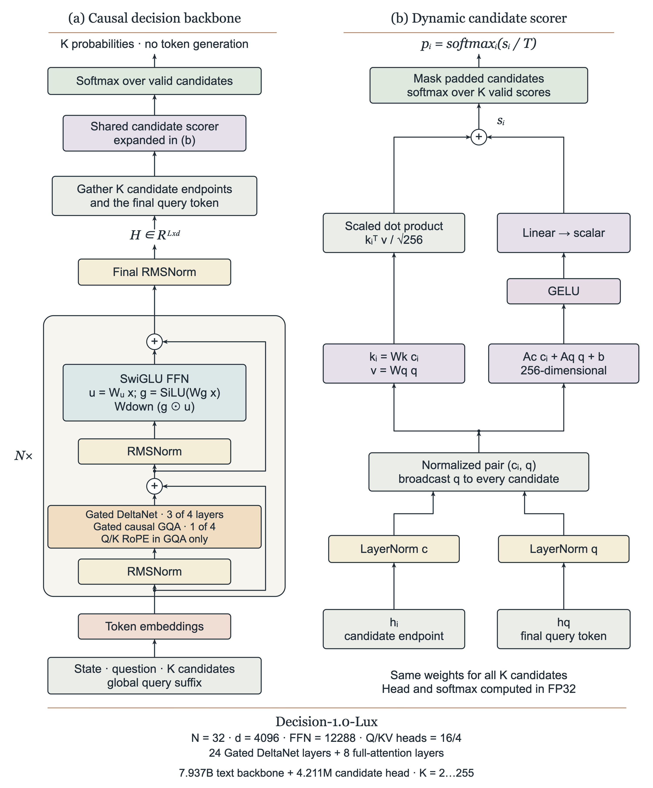
Inside Lux-9B: state, question and candidates enter a 32-layer causal backbone combining Gated DeltaNet and full attention, and a shared candidate head produces typed probabilities. The original caption notes that all candidates for one question are scored in a single forward pass, and independent questions are processed in batches.Lux-9B의 내부입니다. 상태와 질문, 후보가 Gated DeltaNet과 완전 어텐션을 결합한 32층 인과 백본으로 들어가고, 공유 후보 헤드가 타입이 정해진 확률을 만들어 냅니다. 원본 캡션은 한 질문의 모든 후보가 단일 순전파에서 채점되며 독립적인 질문들은 배치로 처리된다고 설명합니다.
Source: Decision 1.0 launch @ 692ff75 (local mirror)
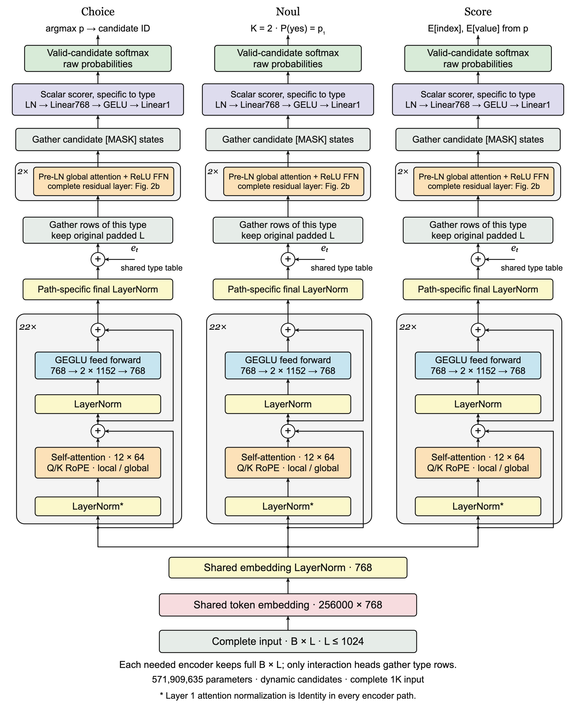
Kai-0.6B takes the other shape: three 22-layer bidirectional paths over shared input embeddings, with separate interaction layers and readouts for Choice, Noul and Score. This is the architectural expression of the "one primitive, one head" idea.Kai-0.6B는 다른 형태를 취합니다. 공유 입력 임베딩 위에 22층 양방향 경로 세 개를 두고, Choice와 Noul, Score마다 상호작용 층과 판독부를 따로 둡니다. "프리미티브 하나에 헤드 하나"라는 발상을 구조로 표현한 것입니다.
Source: Decision 1.0 launch @ 692ff75 (local mirror)
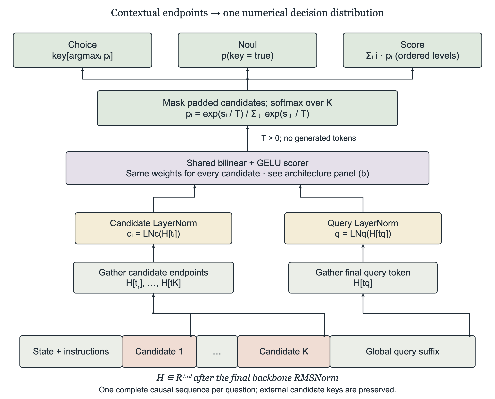
The candidate readout: each contextual candidate endpoint is combined with the global query vector, scored by a shared head, and normalized into probabilities.후보 판독부입니다. 문맥을 통과한 각 후보의 종단 표현을 전역 질의 벡터와 결합한 뒤, 공유 헤드로 채점하고 확률로 정규화합니다.
Source: Decision 1.0 launch @ 692ff75 (local mirror)
This is where the open side earns the comparison — but the claim needs scoping before the numbers, because the repository does not disclose equally for everything it ships. 오픈 진영이 비교의 가치를 만들어 내는 대목입니다. 다만 수치를 보기 전에 범위를 한정해야 합니다. 저장소가 배포하는 모든 모델을 같은 수준으로 공개하고 있지는 않기 때문입니다.
src/training/ covers the Vela 1.0 routing encoders and the mmBERT-era classifiers. The Decision foundation models — Lux-9B, Nox-4B, Kai-0.6B and the rest, which are the models that actually answer the typed questions in §4.3 — have no training code in this repository; only fine-tuning guides on their HuggingFace model cards are referenced. So the honest form of "the open side publishes its training" is: full recipes for the 307M routing encoders, architecture and weights but not training code for the decision models. That is still far more than the Jev side discloses, but it is not the clean contrast it first appears to be.
src/training/이 다루는 범위는 Vela 1.0 라우팅 인코더와 mmBERT 시기의 분류기입니다. 4.3절에서 타입 질문에 실제로 답하는 모델인 Decision 계열 기반 모델, 즉 Lux-9B와 Nox-4B, Kai-0.6B 등은 이 저장소에 학습 코드가 없습니다. HuggingFace 모델 카드의 미세조정 안내만 참조될 뿐입니다. 따라서 "오픈 진영은 학습을 공개한다"를 정확하게 쓰면 이렇게 됩니다. 307M 라우팅 인코더는 전체 레시피가 공개되어 있고, 결정 모델은 구조와 가중치는 공개되었으나 학습 코드는 공개되지 않았습니다. 그래도 Jev 쪽보다는 훨씬 많이 공개한 것이지만, 처음 보이는 것만큼 깨끗한 대비는 아닙니다.
With that scope stated, here is the published recipe for the routing encoders. 범위를 밝혔으니, 라우팅 인코더에 대해 공개된 레시피는 다음과 같습니다.
| Item항목 | Value값 |
|---|---|
| Base checkpoint기반 체크포인트 | vllm-sr/Vela-1.0-Encoder-307M pinned at revision고정 리비전 fe9ccc07… |
| Method방식 | --method full --fresh-head — full encoder fine-tune, new head— 인코더 전체 미세조정과 새 헤드 |
| Steps / batch스텝과 배치 | 1,200 steps (Guard: 600) · batch 16 · accumulate 1 |
| Learning rate학습률 | 1e-5 encoder인코더 · 1e-4 head (10×)헤드(10배) |
| Max length최대 길이 | 32,768 (microbatch token budget 32,768)(마이크로배치 토큰 예산 32,768) |
| Sampling / selection샘플링과 선택 | --balanced-sampling --source-balanced-sampling · --selection source-macro-f1 |
The docs are strict about provenance in a way that is worth copying: "Use the actual parent ID and immutable revision; changing metadata on an old adapter does not transfer it to a new base." And they refuse to let a configured capacity be read as a capability: "A configured 32,768-position capacity is a limit, not evidence of long-document accuracy." 문서는 출처 관리에 관해 본받을 만큼 엄격합니다. "Use the actual parent ID and immutable revision; changing metadata on an old adapter does not transfer it to a new base."라고 적혀 있습니다. 또한 설정된 수용량을 성능으로 읽는 것을 거부합니다. "A configured 32,768-position capacity is a limit, not evidence of long-document accuracy."라는 문장이 그것입니다.
Models now run in a standalone Python runtime supervised by the router, reached over HTTP/JSON on a Unix domain socket, with one bundled call per request stage. The design document is unusually candid about hardware: "CPU and ROCm are validated, CUDA is implemented and unit-tested but marked unvalidated, and XPU and MPS are plugins marked unvalidated." 모델은 이제 라우터가 관리하는 독립 Python 런타임에서 실행되며, 유닉스 도메인 소켓 위의 HTTP/JSON으로 통신하고 요청 단계마다 호출을 하나로 묶어 보냅니다. 설계 문서는 하드웨어 지원 범위를 이례적으로 솔직하게 밝힙니다. "CPU and ROCm are validated, CUDA is implemented and unit-tested but marked unvalidated, and XPU and MPS are plugins marked unvalidated."라고 적혀 있습니다.
| Configuration구성 | p50 | p95 | req/s |
|---|---|---|---|
| Vela 1.0 specialists, 12 CPU cores, five signalsVela 1.0 전용 모델들, CPU 12코어, 시그널 5개 | 16 ms | 58 ms | 38.9 |
| Vela 2.0 0.3B (default), same hostVela 2.0 0.3B(기본값), 동일 호스트 | 79 ms | 100 ms | 11.9 |
| Vela 2.0 0.3B on one MI325X GPUVela 2.0 0.3B, MI325X GPU 1장 | ~7 ms | — | — |
| Decision 2.0 Kai-0.6B, 16 CPU cores, two questionsDecision 2.0 Kai-0.6B, CPU 16코어, 질문 2개 | ~0.2 s | — | — |
The 4.9× gap between the two CPU rows is explained in the repository rather than hidden: the general 0.3B model carries the questions, their options and 17 PII labels (at least 560 tokens) through a 307M-parameter encoder, where each Vela 1.0 specialist reads only the request. That is the real cost of replacing fixed heads with free-form typed questions, stated plainly by the people who made the trade. CPU 두 행 사이의 4.9배 차이는 감추지 않고 저장소에 설명되어 있습니다. 범용 0.3B 모델은 질문과 옵션, 그리고 PII 라벨 17개(최소 560토큰)를 307M 파라미터 인코더에 함께 통과시키는 반면, Vela 1.0 전용 모델들은 요청만 읽습니다. 고정 헤드를 자유 형식 타입 질문으로 바꾸면서 치르는 실제 비용이며, 그 선택을 한 쪽이 직접 밝혀 두었습니다.
Envoy ext_proc gRPC stream
├─ 1. 요청 헤더 단계 phase dispatch (processor_core.go)
├─ 2. BUFFERED / STREAMED 선택
├─ 3. 본문 파이프라인 → 토큰화 → 사전 라우팅 단계들
├─ 4. 결정 평가 진입
│ └─ 시그널 병렬 팬아웃 (필요 없는 시그널은 건너뛰고, 한 런타임 호출로 묶음)
│ └─ 결정 모델에 타입 질문 전송 → 확률이 달린 답 수신
├─ 5. 시그널 합성 3값 논리 {true, false, unknown} + on_unknown 정책
├─ 6. 라우팅 결정 업스트림 모델 선택 · 추론 모드 · 안전 정책
└─ 7. 응답 경로 응답 헤더/본문 단계Two properties of this path matter for serving. The fan-out is demand-driven: a signal that no active decision rule references is not computed at all. And the bundling rule means a request's model work for one runtime goes out as a single call, which is the same economics idea as Jev's "one state, many questions" — arrived at independently, on the serving side rather than the API side. 이 경로에서 서빙 관점으로 중요한 성질이 두 가지 있습니다. 팬아웃이 수요 기반이어서, 활성화된 결정 규칙이 참조하지 않는 시그널은 아예 계산하지 않습니다. 그리고 묶음 규칙에 따라 한 런타임에 보낼 모델 작업이 호출 하나로 나갑니다. 이는 Jev의 "상태 하나에 질문 여럿"과 같은 경제성 발상이며, API 쪽이 아니라 서빙 쪽에서 독립적으로 도달한 결론입니다.
The arXiv paper puts Jev at 100% alongside five other configurations. TypeSafe's own benchmark, on harder and more realistic workflows, puts it at 67.8% — below GPT-5.6 Sol (~74%) and Claude Opus 5 (~73%). Both are true, and reading them together is more informative than reading either alone. arXiv 논문은 Jev를 다른 다섯 구성과 함께 100%에 올려놓습니다. 반면 TypeSafe 자체 벤치마크는 더 어렵고 현실적인 워크플로에서 Jev를 67.8%에 두며, 이는 GPT-5.6 Sol(약 74%)과 Claude Opus 5(약 73%)보다 낮습니다. 두 결과 모두 사실이며, 함께 읽을 때 각각을 따로 읽을 때보다 더 많은 것을 알 수 있습니다.
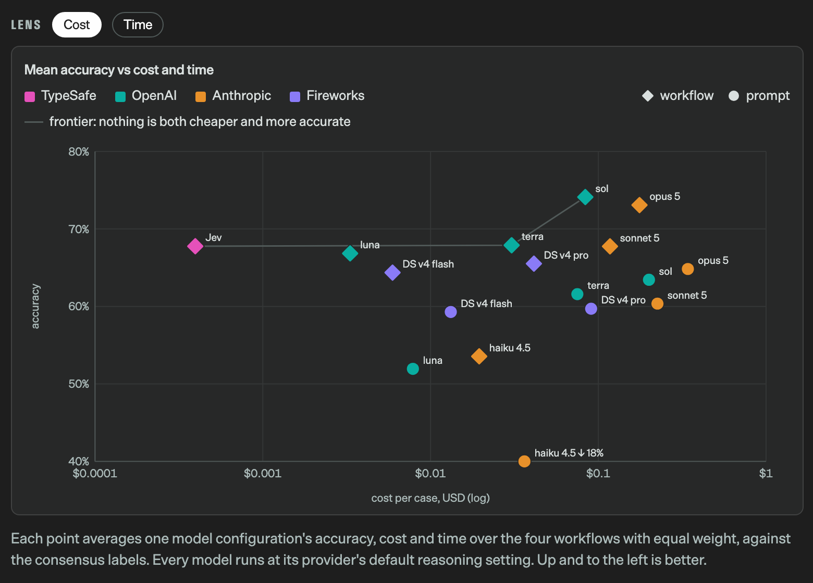
TypeSafe's own WorkflowEvals, averaged over four workflows. Jev (pink, far left) is on the frontier because of cost, not because of accuracy: at the top of the accuracy axis sit sol and opus 5, both one to two orders of magnitude more expensive per case.TypeSafe 자체 WorkflowEvals이며 네 가지 워크플로를 평균한 결과입니다. 분홍색으로 표시된 Jev가 맨 왼쪽에서 프런티어에 올라 있는 이유는 정확도가 아니라 비용입니다. 정확도 축 위쪽에는 sol과 opus 5가 있는데, 둘 다 사례당 비용이 한두 자릿수 더 높습니다.
Screenshot: evals.typesafe.ai — vendor-run benchmark벤더가 직접 수행한 벤치마크
It would be easy to read §4 as "the open side caught up in three weeks." Its own launch material says otherwise. The Decision 1.0 announcement publishes a ranking in which the hosted Jev reference leads every open model it ships. 4장을 "오픈 진영이 3주 만에 따라잡았다"로 읽기 쉽습니다. 그런데 그 프로젝트의 출시 자료가 다르게 말합니다. Decision 1.0 발표는 호스팅되는 Jev 기준점이 자사가 배포하는 모든 오픈 모델을 앞선다는 순위를 공개합니다.
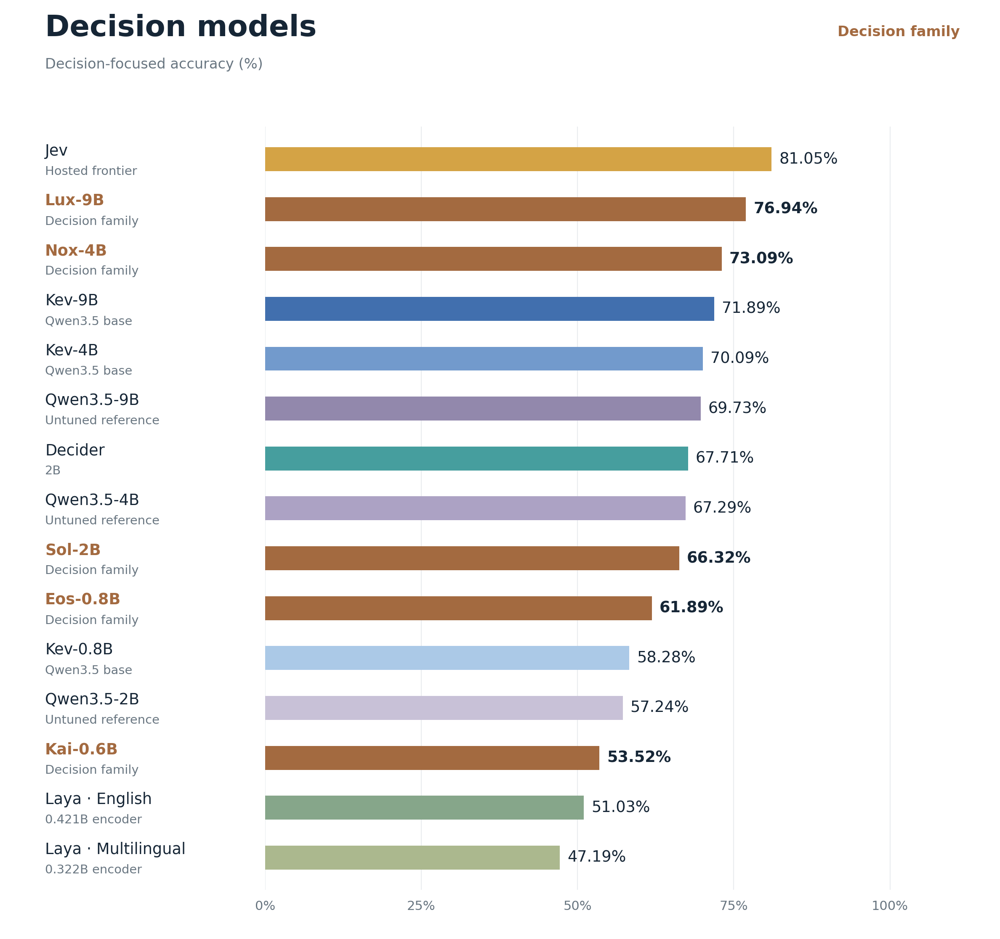
Decision-focused accuracy as the project publishes it. Jev (hosted frontier) 81.05% · Lux-9B 76.94% · Nox-4B 73.09%. The caption on the original reads: "Lux leads the displayed open-model references on this suite. The hosted Jev reference remains higher overall at 81.05."프로젝트가 직접 공개한 결정 과제 정확도입니다. Jev(호스팅 프런티어) 81.05%, Lux-9B 76.94%, Nox-4B 73.09% 순입니다. 원본 캡션은 다음과 같습니다. "Lux leads the displayed open-model references on this suite. The hosted Jev reference remains higher overall at 81.05."
Source: vllm-project/semantic-router — Decision 1.0 launch @ 692ff75 (local mirror)
| Jev (TypeSafe AI) | vLLM Semantic Router | |
|---|---|---|
| What is it무엇인가 | hosted decision-only model; typed answers with probabilities호스팅되는 판단 전용 모델이며, 타입이 정해진 답과 확률을 돌려줍니다 | serving-path router that asks decision models typed questions서빙 경로에 놓여 결정 모델에게 타입 질문을 던지는 라우터입니다 |
| How it was trained어떻게 학습했는가 | name onlyRLCD; no loss, no data, no benchmark answers publishedRLCD라는 이름뿐이며 손실 함수와 데이터, 벤치마크 답변이 공개되지 않았습니다 | partlyrouting encoders: full recipe (pinned 307M base, 1,200 steps, lr 1e-5 / head 1e-4). Decision models: weights and architecture published, training code not in the repo라우팅 인코더는 레시피 전체가 공개되어 있습니다(고정된 307M 기반 모델, 1,200스텝, 학습률 1e-5와 헤드 1e-4). 결정 모델은 가중치와 구조는 공개되었으나 학습 코드가 저장소에 없습니다 |
| Architecture모델 구조 | not disclosedcontext 64k/32k and the 255-option cap are the only hard numbers컨텍스트 64k와 32k, 옵션 255개 상한만이 확인 가능한 수치입니다 | disclosedVela-1.0-Encoder-307M / Vela 2.0 0.3B, weights publishedVela-1.0-Encoder-307M과 Vela 2.0 0.3B이며 가중치가 공개되어 있습니다 |
| Inference cost추론 비용 | $0.042/1M input tokens, output free; extra questions nearly free (13 questions = 1.06× of one)입력 100만 토큰당 0.042달러이고 출력은 무료이며, 질문을 더해도 비용이 거의 늘지 않습니다(질문 13개가 1개의 1.06배) | your own CPU/GPU; 16 ms p50 with specialists, 79 ms with the general 0.3B, ~7 ms on one MI325X자체 CPU와 GPU를 사용하며, 전용 모델로는 p50이 16ms, 범용 0.3B로는 79ms, MI325X 한 장에서는 약 7ms입니다 |
| Inference flow추론 흐름 | client → API → one state read → all questions in parallel → typed response클라이언트에서 API로, 상태를 한 번 읽고 모든 질문을 병렬 평가한 뒤 타입이 정해진 응답을 돌려줍니다 | Envoy ext_proc → demand-driven signal fan-out → one bundled runtime call → 3-valued composition → upstream choiceEnvoy ext_proc에서 시작해 수요 기반으로 시그널을 펼치고, 런타임 호출 하나로 묶은 뒤 3값 논리로 합성하여 업스트림을 고릅니다 |
Both sides agree, and the vendor says it most bluntly: the model recognizes the shape of an answer rather than tallying. Ask it which relation holds; let code count.양쪽 모두 같은 입장이며, 벤더가 가장 분명하게 말합니다. 모델은 세는 것이 아니라 답의 형태를 알아봅니다. 어떤 관계가 성립하는지만 묻고, 세는 일은 코드에 맡기십시오.
The paper's seven responses had correct labels and wrong counts. Keep relation-level references and declared outputs in your regression set, or the test stays green while the data is wrong.논문의 일곱 건은 라벨이 맞고 수치가 틀렸습니다. 회귀 테스트에 관계 수준의 참조 답과 선언된 산출값을 함께 두지 않으면, 데이터가 틀린 채로 테스트만 계속 통과합니다.
A timed-out classifier should not silently become "false". The router's 3-valued logic with an explicit on_unknown policy is the pattern worth copying.시간이 초과된 분류기가 조용히 "거짓"이 되어서는 안 됩니다. on_unknown 정책을 명시하는 라우터의 3값 논리가 본받을 만한 방식입니다.
Jev's documented first-position bias means a Choice is not order-invariant. Reorder and re-run before trusting a close call.Jev가 문서로 인정한 앞 위치 선호 편향은 Choice가 순서에 영향을 받는다는 뜻입니다. 근소한 판정을 신뢰하기 전에 순서를 바꿔 다시 실행해 보십시오.
692ff7558e909bda5a6b39585c97f0af91543b37
(2026-10-11). All code links are pinned to this SHA.모든 코드 링크는 이 SHA에 고정되어 있습니다.Images are mirrored locally under assets/decision-models/ for permanence, with the source linked beneath each figure. The scatter chart is a screenshot of a JavaScript-rendered page and is reproduced for commentary.
그림들은 영구 보존을 위해 assets/decision-models/ 아래에 로컬 사본으로 두었고, 각 그림 아래에 출처를 링크했습니다. 산점도는 자바스크립트로 렌더링되는 페이지를 촬영한 스크린샷이며 해설 목적으로 인용했습니다.